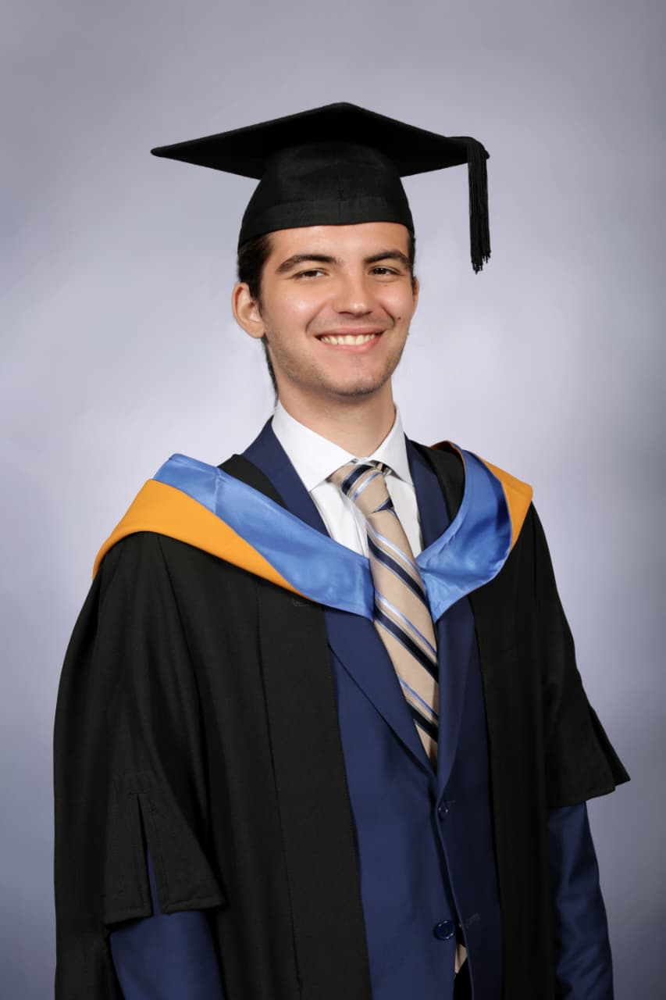
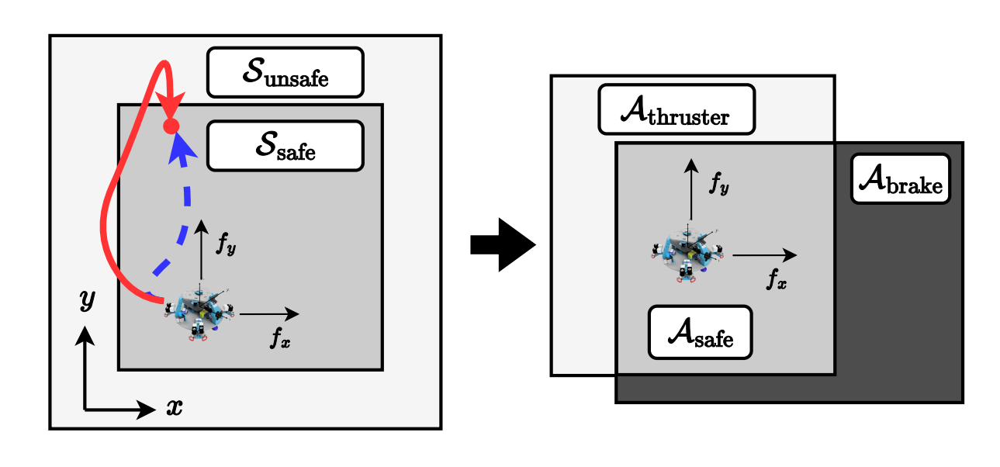
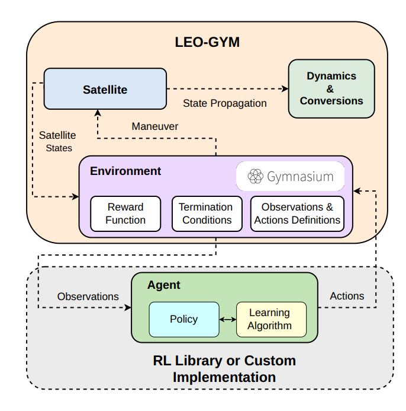
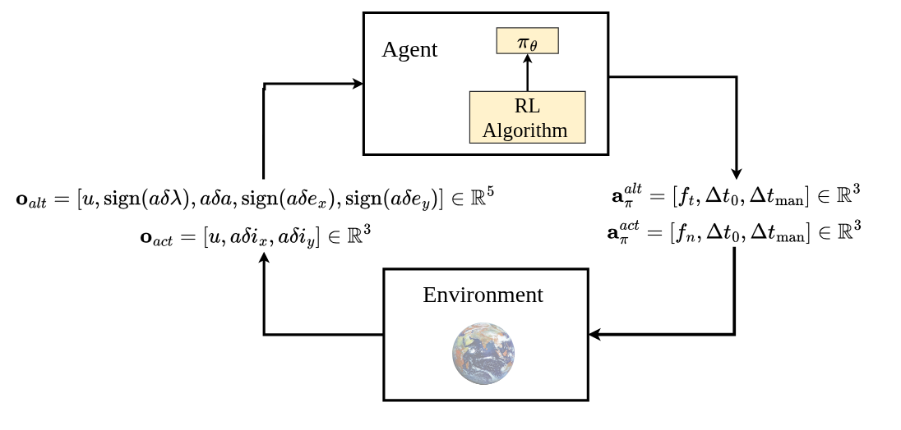
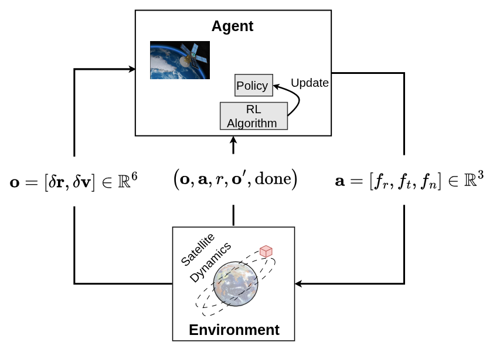
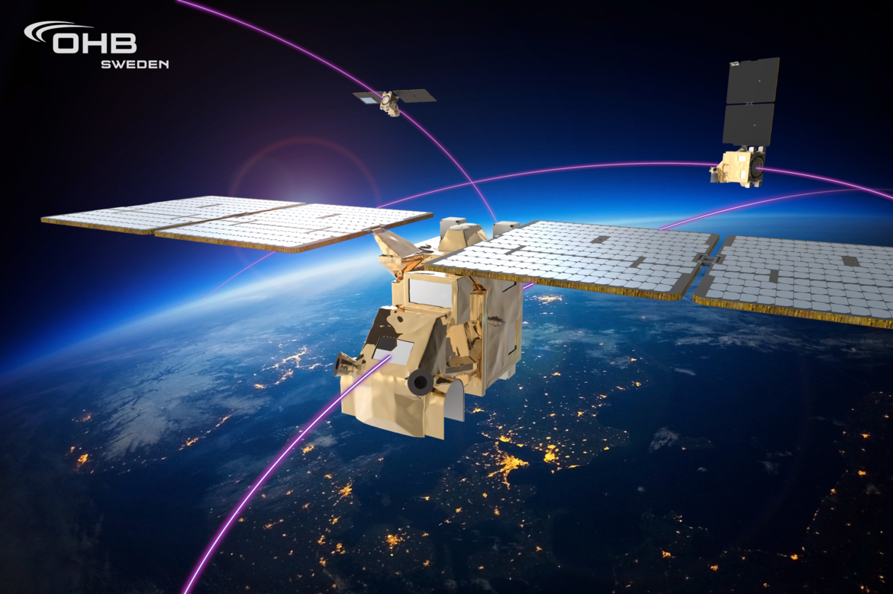
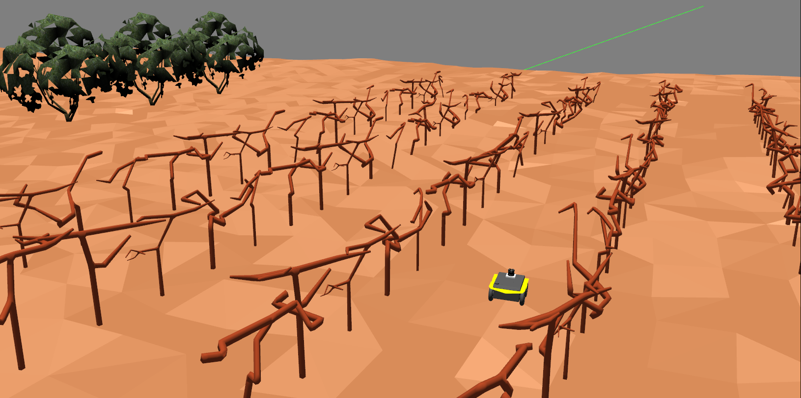
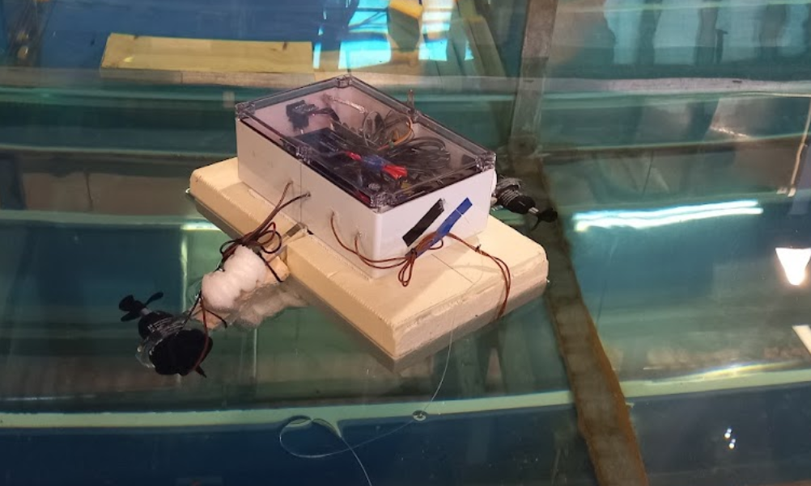

Nektarios Aristeidis Tafanidis
PhD Candidate in Space Robotics and Reinforcement Learning — Luleå University of Technology
I am currently a PhD candidate at Luleå University of Technology in northern Sweden, where I conduct research in space autonomy and robotics using reinforcement learning.
I have a background in aerospace and electrical and electronic engineering, and hold an MSc in Autonomous Vehicle Dynamics and Control from Cranfield University and a BEng in Electrical and Electronic Engineering from Newcastle University.
Throughout my academic and research career, I have worked across the full autonomy stack, from theoretical algorithm development to real-world implementation and validation on autonomous robotic systems. My experience spans autonomous ground, aerial, surface, underwater, and, most recently, space robotic systems and satellites.
In my free time, I practice fencing (épée) and kendo and go mountain biking. I am also passionate about history and paleontology, and I enjoy playing real-time strategy (RTS) games.
News
Publications

Action-Bounded Safe Reinforcement Learning for Control of a Free-Floating Spacecraft Platform
IFAC World Congress, 2026


Reinforcement Learning-Based Station Keeping Using Relative Orbital Elements
Advances in Space Research, 2025
COSPAR Outstanding Paper Award for Young Scientists, 2025

Reinforcement Learning Based Intelligent Control for Low-thrust Tight Station Keeping in Low Earth Orbit
International Journal of Control, Automation and Systems, 2025
Projects

2023 — Present
Autonomous and optimized orbit control management for a satellite cluster. A collaboration between LTU, ESA, OHB, and DLR.

2023 — Present
Open-source reinforcement learning environment for satellite guidance, navigation, and control in Low Earth Orbit.

Autonomous Vineyard Inspection Robot
2023
MSc thesis, Cranfield University. Framework using semantic and topological maps for navigation of an agribot (Jackal UGV) to autonomously inspect a vineyard.

USV Dynamic Positioning System
2022
BEng thesis, Newcastle University. Miniature Unmanned Surface Vessel acting as a Dynamic Positioning system to support Autonomous Underwater Vehicle (AUV) operations.
Experience
PhD Candidate
Luleå University of Technology
Research in autonomous spacecraft, reinforcement learning, and space robotics. Co-supervisor for MSc thesis projects. Teaching assistant in Industrial Automation (R7008E). Delivered a PhD-level course in Reinforcement Learning.
MSc, Autonomous Vehicle Dynamics and Control
Cranfield University
UAS dynamics and control, sensor fusion and state estimation, guidance and navigation, advanced and nonlinear control, AI and deep learning, aerial communication systems.
Research Assistant, Autonomous Surface Vehicles
Newcastle University
Developed an Unmanned Surface Vehicle (USV) for educational applications.
Research Assistant, Artificial Intelligence
Newcastle University
Worked on parallelizing the Tsetlin Machine algorithm.
Project Manager & President, Engineering Projects Society
Newcastle University
President (2021–22): led the society across marine, electrical, and automation sub-teams, budget planning, and social events. Project Manager (2020–21): coordinated sub-teams, timelines, and task allocation for ROV and ASV builds.
BEng, Electrical and Electronic Engineering
Newcastle University
Control theory, electronics, signal processing, PLCs, computer vision.
Awards
- COSPAR Outstanding Paper Award for Young ScientistsCommittee on Space Research (COSPAR) 2026
- Cranfield ScholarshipCranfield University 2022
- Best Poster AwardIntelligent Sensing and Communications Group, Newcastle University 2022
- 2nd Place, Marine Autonomy Challenge (MAChallenge)Society for Maritime Industries 2022
- First Robot Movement & Best Design AwardsUnibots Competition 2022
- Engineering Excellence ScholarshipNewcastle University 2019
Certifications
- Unmanned Aircraft System Remote Pilot A2 Certificate of Competency (A2 CofC)UK Civil Aviation Authority 2022
- NCL+ Advanced Award in Business BasicsNewcastle University Business School 2021
- NCL+ Advanced Award in LeadershipEducational Leadership Centre 2021
- NCL+ AwardNewcastle University 2020
Volunteering
- Journal Peer ReviewerAdvances in Space Research, Acta Astronautica, CEAS Aeronautical Journal Present
- Guest Speaker, MA T&I Mock ConferenceNewcastle University 2022
- Peer Mentor, NUSUNewcastle University Students' Union 2020 — 2022
- Student Representative, NUSUNewcastle University Students' Union 2020 — 2022